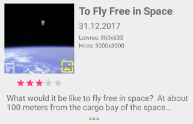
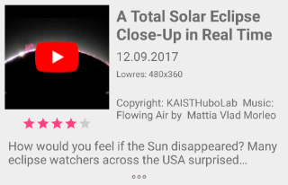

More Fun In Space
Achtung für DE Benutzer: die Hilfe ist erstmal nur in englisch vorhanden, eine deutsche Version wird folgen.
Fun In Space provides you with the NASA Astronomic Picture Of the Day (APOD). Every day, NASA presents a new image (or sometimes a video) of the day. On each App start, Fun In Space checks for a new daily item.
FunInSpace keeps track of all images, so that over time, you will get a growing collection of images. You can create your personal list by deleting images, rating images or setting them as wallpaper.
Intro Videos
Fun In Space should be easy to use. Nevertheless, you might want to view the following short videos. Note: these videos are not yet available
| Using wallpapers This is just a quite bad first tutorial video about how to use the wallpaper function. Quite some room for improvement :) | |
| nnnn nnnn |
Overview
All images are shown in a scrollable list. The following picture shows an example image item.

The rating for this image has been set to 3 stars. Left to the thumbnail, the image title, the date and the image resolution for a lowres and a hires version is displayed.
The symbols in the lower edges of the thumbnail images have the following meanings:
This image is stored locally
A wallpaper exists for this image
This is the active wallpaper
NASA also provides videos from time to time. In most cases, these are YouTube Videos, but sometimes also Vimeo and even simple MP4 files are presented. Videos are marked by a symbol in the thumbnail center. The following shows an example of a YouTube Video.

Note, that in this case, NASA also did provide a copyright statement. Herbert todo: remove lowres info for youtube
The following symbols are shown in the thumbnail center for video:
This is a YouTube video
This is a Vimeo video
This is an MP4 video
Click on a thumbnail to show the image or video. Videos are always streamed online and require an active network connection, while images can be saved locally, so that the next time you watch them, no network connection is required. You can select this in the settings dialog.
If you click somewhere else in the list item, an explanation text box is expanded or collapsed.
A long click somewhere else in the list item shows a context menu to allow actions specific to the selected item. Note, that you can select multiple items. LINK TO extra page
Displaying images and videos
After clicking the thumbnail image, the high resolution version of the image is shown in full screen on your display. You can pinch zoom and scroll to detect details in the image. This always depends on the size of the image. The high resolution images vary in size, as you can see in the item information.
If you like the image, you can create a wallpaper by just doing a long click on the fullscreen image. See Using wallpapers for details.
Setting the rating
To be shown
Reading the information
While you have a look at the image in fullscreen, Fun In Space can read the explanation provided by NASA.